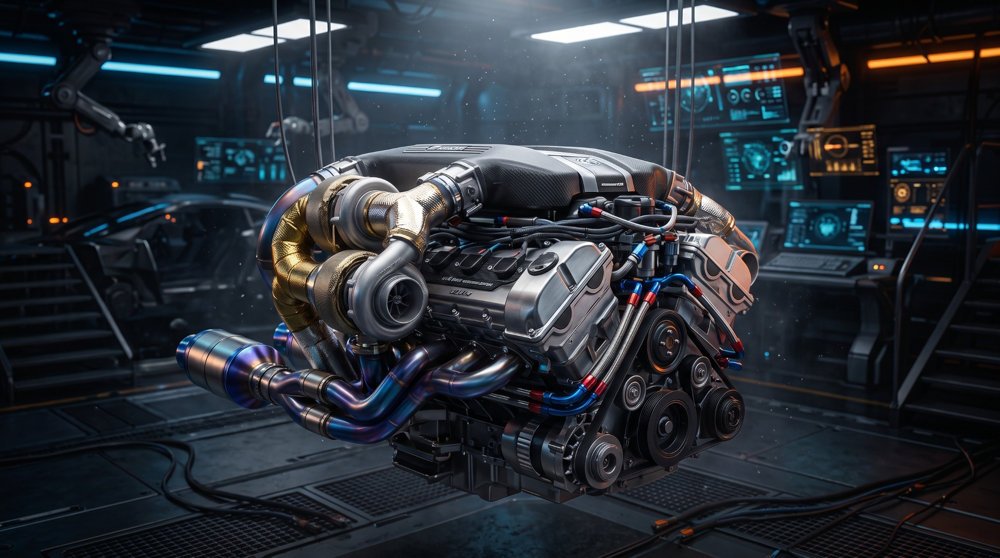
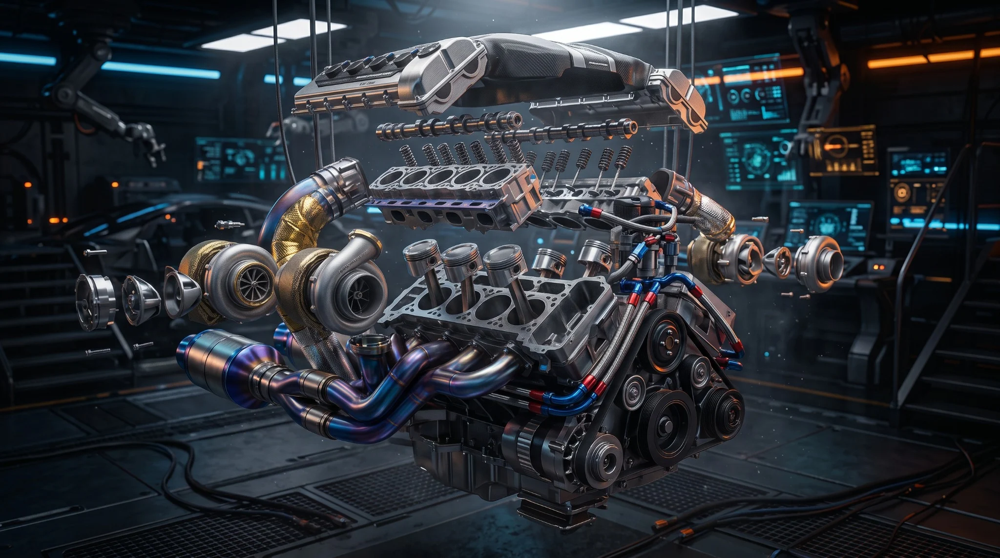

O seu objetivo.
Como você usa o carro? O que quer melhorar? Tudo começa com uma boa conversa.

MECÂNICA DE PRECISÃO. DNA DE PISTA.
Da revisão à preparação. Tecnologia e cuidado em cada detalhe do seu motor.
Conheça os serviços ↓01 / ESPECIALIDADES
SEU CARRO. NOSSA OBSESSÃO.O melhor desempenho começa entendendo o seu carro e o que você espera dele. Cada serviço tem um propósito.

EXPLORAR. ENTENDER. EVOLUIR.↗A ESSÊNCIA SPACE
Preparar não é simplesmente trocar componentes. É entender como tudo trabalha junto. Da admissão ao escape, da resposta do motor à segurança do conjunto.
É essa visão que move a Space: decisões técnicas, conversa clara e um projeto que faz sentido para você.
Conheça nosso método ↘02 / NOSSO MÉTODO
SEM ATALHOS. COM PROPÓSITO.Como você usa o carro? O que quer melhorar? Tudo começa com uma boa conversa.
Avaliamos o conjunto para entender o que precisa de atenção e quais caminhos fazem sentido.
Escopo e orçamento alinhados antes de começar. Você participa de cada decisão.
Serviço acompanhado de verificações e orientações para você cuidar da próxima etapa.
03 / SEU PRÓXIMO PROJETO
Conte qual é o seu carro e aonde você quer chegar. O próximo passo começa com uma conversa.
Sem compromisso. Do básico ao extraordinário.